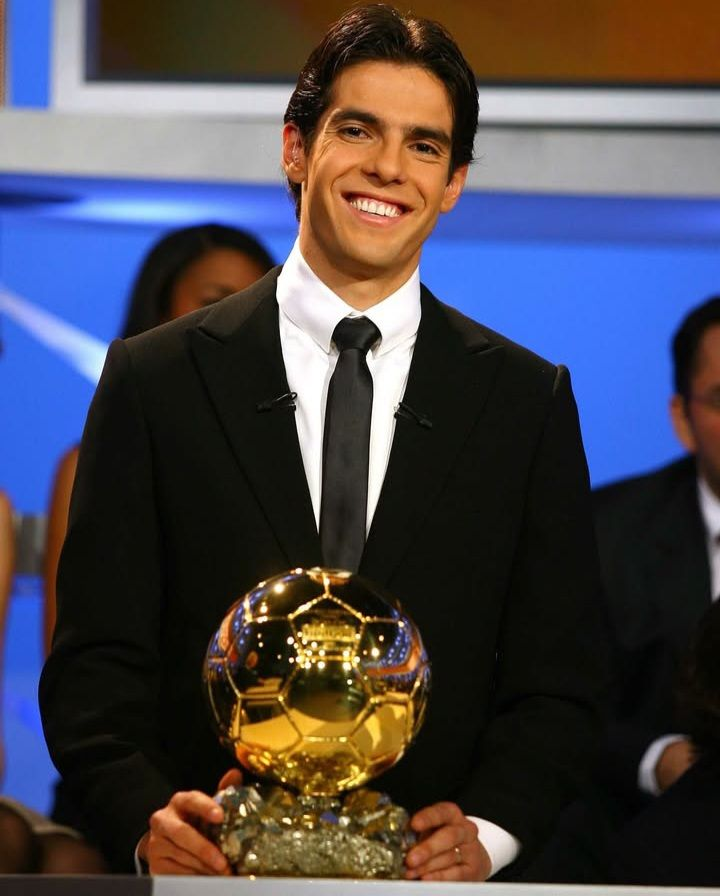

História
Kaká chegou ao Milan em 2003, vindo do São Paulo. Com técnica refinada, visão de jogo e carisma, tornou-se rapidamente um dos jogadores mais adorados pela torcida rossonera. Em 2007, liderou a equipe na conquista da Liga dos Campeões da UEFA e foi coroado o melhor jogador do mundo.
Conquistas
- 🏆 Liga dos Campeões da UEFA (2006–07)
- 🏆 Mundial de Clubes da FIFA (2007)
- 🏆 Serie A (2003–04)
- 🏆 Supercopa da UEFA (2003, 2007)
- ✨ Bola de Ouro (2007)
- ✨ Melhor Jogador do Mundo FIFA (2007)
Galeria
